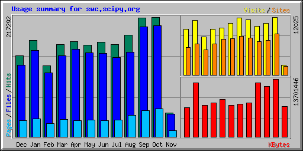
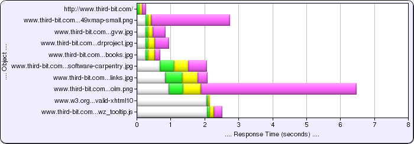

Measurement
One of the differences between professionals and amateurs is that professionals measure things, and use the data they collect to improve their performance. Whether it’s the cost of making a widget, teaching evaluations, or how far your tape measure reaches, knowing where you are and how things are changing is a sign that you take what you’re doing seriously.
So, here are the latest stats from the Software Carpentry site:

I had expected a drop-off after September, but was pleasantly surprised to see the numbers actually increase (due in part to traffic from students in Europe whose instructors are using the notes in courses).
And this morning, Grig Gheorghiu pointed me at AlertSite’s tools, which include a gadget to show you where the time actually goes when you’re loading a web page. Here, for example, is a picture of what happens when you load http://third-bit.com:

There’s a ton of information in here—it’s particularly nice to actually see the concurrency. No idea why it takes longer to load the OLM logo than it does to load the map of past 49X students (yes, it’s repeatable), but at least now I know that I have something to figure out.